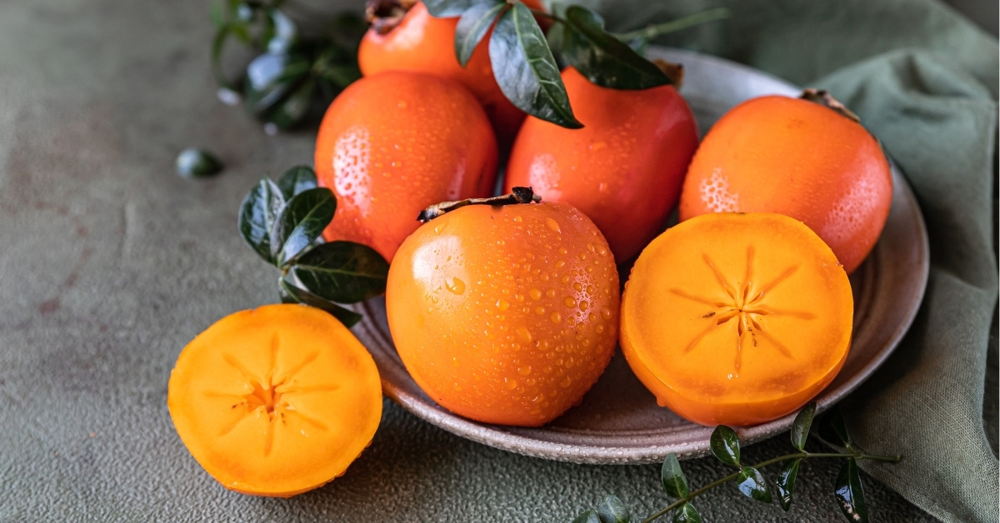

Peach
Sweet, soft and delicious taste, provides vitamins and dietary
fiber.

Apple
From a sweet taste, provides wonderful vitamins and dietary fiber.

Banana
A soft, tasty fruit that provides energy and vitamins without
effort.

Pomegranate
A penetrating taste, rich in antioxidants, the fruit of the holiday
of the little ones.
Carambola
A unique fruit, sharp and refreshing taste, rich in vitamins.

Watermelon
From coolness, sweet in taste, provides moisture and vitamins.

Persimmon
Small, from an envelope of flavors, provides vitamins and perfect
sweetness.

Pineapple
Sea fruit, with a sweet-sour taste, delightful and fresh.

Plum
Soft and sweet fruit, provides fiber and vitamins required for
recovery.